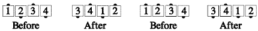

From a general line: Centers Cross Run, then the new centers Trade. If both centers are facing the same way at the start of the call, they Half Sashay, blending into a Run around the original far end.

Timing: 6